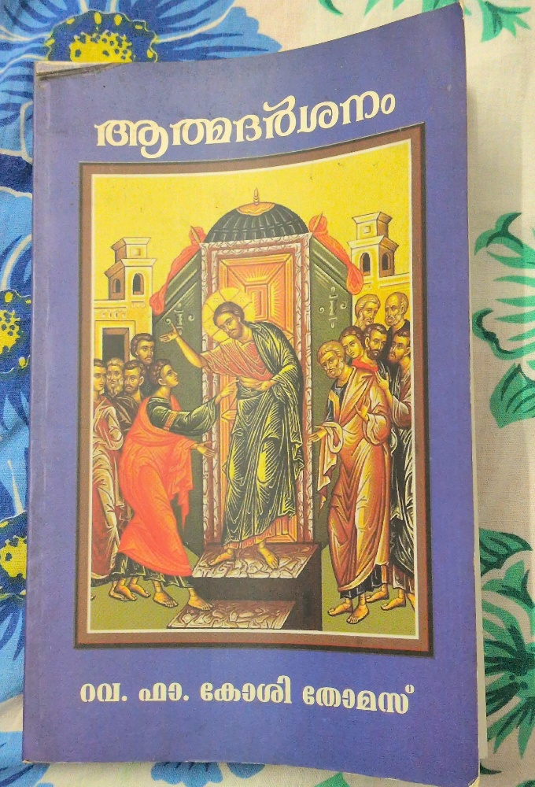

I read this book when I was sick for a few days while in Secunderabad and was mostly lying on the bed. The book was given to my late mother-in-law by Koshy achen after it was published in 2012.

Table of Contents
| No. | Malayalam Title | English Translation | Page |
|---|---|---|---|
| 1 | വന്ദനവും അറിയിപ്പും | Greetings and Announcements | 13 |
| 2 | ഇടയന്മാരുടെ മാതൃക | The Model of Shepherds | 16 |
| 3 | തിരുസാന്നിധ്യം കൂടെപ്പോരണം | May the Divine Presence Abide With Us | 21 |
| 4 | മണവാളന്റെ മഹത്വം | The Glory of the Bridegroom | 28 |
| 5 | കല്ല് അപ്പമാകണം | Stone Must Become Bread | 33 |
| 6 | ശമര്യാ സ്ത്രീയുടെ അഞ്ചു ഭർത്താക്കന്മാർ | The Samaritan Woman’s Five Husbands | 37 |
| 7 | ഏകാന്തം | Solitude | 41 |
| 8 | വൃക്ഷവും മനുഷ്യനും | The Tree and the Human | 49 |
| 9 | പാപത്തിന്റെ നിറം ചുവപ്പ് | The Color of Sin is Red | 53 |
| 10 | മൺകുടങ്ങൾ | Earthen Pots | 59 |
| 11 | സംസാരശേഷിയില്ലാത്തവയുടെ സംസാരം | The Speech of the Speechless | 64 |
| 12 | ഐക്യവും സൗഖ്യവും | Unity and Healing | 70 |
| 13 | വിദ്യാധനം | The Wealth of Knowledge | 76 |
| 14 | ഇരട്ട വിളികൾ | The Double Calls | 82 |
| 15 | ഭവന സന്ദർശനം | House Visitation | 89 |
Introduction
1. The Hidden Journey of the Soul
- While we walk, we often fail to notice the “countless grains of sand” beneath our feet. Similarly we overlook small details of our existence.
- Even when we think we are walking alone or credit ourselves for our progress, there is a “Divine Guard” (Deivathinte Kaaval) protecting and guiding our steps, even when we are unaware of it.
2. A Vision for Spiritual Awakening
- While people easily notice physical changes in the world, like the transition from day to night, they often ignore the subtle spiritual changes within themselves. The book provides -
- New Perspective: To help those whose spiritual lives have grown dim or “darkened”.
- Call to True Repentance: Asks us to change from “unrepentant confessions” to true & sincere confessions → tearful transformation of the heart.
3. Purpose and Inspiration
- This “small book” is a collection of thoughts woven together like “pearls on a string,” gathered from Achen’s experiences in priestly ministry.
- Goal: To help readers descend into the “unmeasurable depths” of spiritual life to discern right from wrong and choose the “good path”.
Chapter 1 - Greetings and Announcements
“Greetings, you who are highly favored!” (Annunciation to St. Mary) (St. Luke 1:28)
1. The Greetings (Vandhanam)
A greeting from God can transform a person.
- Restoration of Honor: Man was created in God’s image but lost his divine glory through sin. Living a life of holiness allows God to “greet” man again, restoring his spiritual beauty.
- The Potter and the Clay: Like a potter who can reshape vessels, God has the authority to break and reshape us into vessels He loves. When we are honored by God, it outweighs any worldly dishonor.
- True Respect: In a world that often lacks respect, even for parents or God, a divine greeting teaches us how to truly honor others.
2. The Announcements (Ariyippu)
Three specific “announcements” that God makes to humanity -
- God’s Love: The announcement is a declaration that God loves mankind. God loves the sinner while hating the sin.
- A Path for the Fallen: While sin makes man an outcast, God announces the ways to receive Him back.
- God Dwelling with Man: The final announcement is that God desires to reside with humanity.
Chapter 2: The Model of Shepherds
“And there were shepherds living out in the fields nearby, keeping watch over their flocks at night.” (St. Luke 2:81)
1. Spiritual Vigilance and the “Fire”
The shepherds keep watch over their flocks at night.
- The Symbolism of Fire: In the Bible, fire often represents the divine presence, from the burning bush seen by Moses, to the tongues of fire at Pentecost.
- Contrasting Reactions: While the shepherds sat by the fire and received the message of Christ, Peter sat by a fire and denied Him.
- “fire” (divine presence) can either purify or destroy, depending on the state of one’s heart.
2. The Power of Fellowship (Koottaayma)
The shepherds were not alone, they were a community.
- Mission-Driven Unity: Their bond was strengthened by their shared duty to protect the sheep from predators like wolves.
- A Cure for Selfishness: In modern culture, people prefer to be alone with their “selfish thoughts”. True fellowship in Christ is necessary to keep one from “scattering” or falling away.
3. Unity in Diversity
The shepherds came from different homes but sat together in “oneness of opinion”.
- Divine Pleasure: God is pleased by unity, the unity of believers compares to the unity of the Holy Trinity.
- Breaking Barriers: Today, even when people gather, they often fail to truly communicate or find common ground because they lack a shared spiritual focus.
4. Hearing and Journeying Together
- Hearing the Word: Listening to the Word is a form of worship. The shepherds heard the message together, which allowed them to act together.
- The Journey: They did not go to Bethlehem alone; they went as a group. Throughout the Bible, important journeys (like the disciples being sent out two by two) happen in pairs or groups.
- The Goal: Every spiritual journey, search, and act of worship should lead to one goal: finding and worshiping Christ.
Chapter 3: May the Divine Presence Abide With Us
“If Your Presence does not go with us, do not send us up from here.” (Exodus 33:15)
1. God Sends a Guide
God promises to send an angel before us (Exodus 33:2). While we may encounter many “wrong guides” in life, we must be obedient to the divine guide who knows our destination better than we do.
2. Avoid Destruction on the Path
God’s temporary “absence” in the midst of the journey is sometimes a mercy to prevent our destruction due to our own sins. Pray for God’s mercy throughout the “middle” of life’s journey.
3. Removing “Ornaments”
People often value worldly “ornaments” or idols more than God. To truly be guided by divine commands, one must discard these internal idols that compete for God’s place in the heart.
4. The Pillar of Cloud
This represents the visible sign of God’s presence at the door of the Tabernacle (Exodus 33:9). If we remain close to the “temple” and the divine presence, that glory will protect us wherever we stand.
5. Not Leaving the Tabernacle
Joshua “did not depart from the tabernacle” (Exodus 33:11). Lasting peace is found only within the “protective circle” of God’s sanctuary, rather than in temporary worldly shelters.
6. The Assurance of Rest
God promises, “My Presence will go with you, and I will give you rest” (Exodus 33:14). Any journey undertaken without God’s presence is ultimately in vain.
7. Cover/Protect with God’s Hands
God covers Moses with His hand in the cleft of a rock (Exodus 33:22). This “Rock” is Christ. Hope we remain safe within this “cleft” throughout our life.
Chapter 4: The Glory of the Bridegroom
“His disciples believed in Him.” (St. John 2:11)
- Superficial Praise vs. True Faith: While many at the wedding enjoyed the physical miracle of water turning into wine, only the disciples truly “believed”. Most people were satisfied with the material fulfillment of their “worldly interests” and praised the wine rather than the Bridegroom.
- The Danger of Loving the Gift Over the Giver: Modern believers have a tendency to seek God only for His “good gifts”. Once their prayers are fulfilled, people often forget God, becoming lovers of the gift rather than the Giver, a habit that distances them from true discipleship.
- Marriage as a Divine Sacrament: God’s first intervention in human life was at a marriage in Eden between Adam and Eve. Similarly, Jesus began his public ministry at a wedding feast, showing God’s continued involvement in human needs.
- Christ as the True Bridegroom: Since the names of the earthly bride and groom are not mentioned in the biblical text, the “Bridegroom” is Christ and the “Bride” is the Holy Church. This banquet is a precursor to the spiritual wedding feast where the faithful are joined with Christ.
- The Metaphor of the Six Stone Jars: The six stone jars used for purification → the six days of creation. In the Church, these jars represent the Holy Sacraments. Just as the water was transformed into superior wine, through these sacraments, a worldly person is transformed into a spiritual one.
- Transformation and Fullness: The jars were filled “to the brim” → symbolizing completeness. Believers should be like “earthen pots” that are filled with God’s grace until they are transformed and can lead others to purification.
The world often gives its “best” first, followed by the “inferior”. However, God always reserves the greatest blessings for the end.
Chapter 5: Stone Must Become Bread
“If you are the Son of God, tell these stones to become bread.” (St. Matthew 4:3)
- The Nature of Temptation: Satan’s “enthusiasm” in the desert was not a random act, but a strategic attempt to exploit Christ’s physical hunger after forty days of fasting. Unlike the temptation of Eve in Eden, where Satan promised she would become like God, here he tries to convince Christ to use His divine power solely for personal, physical satisfaction.
- The Response of Word and Spirit: Jesus counters the temptation by quoting Deuteronomy 8:3: “Man shall not live by bread alone, but by every word that comes from the mouth of God”. Jesus uses the same reminder God gave the Israelites in the wilderness to teach that spiritual nourishment is superior to material food.
- The Symbolism of the “Stone”: There are several biblical contexts for the “stone” or “rock” to show that Satan failed to realize he was asking the True Rock to perform a lesser miracle:
- The Rock in the Wilderness: The rock from which God provided water for the Israelites.
- The Rock of Protection: The cleft in the rock where God hid Moses to protect him from the intensity of His glory.
- The Foundation Stone: The solid rock upon which a wise man builds his house, representing Christ as the “Chief Cornerstone”.
- The Stone of the Tomb: The stone rolled away from Lazarus’ tomb and Jesus’ own tomb, marking the transition from death to life.
- Christ as the Living Bread: For a “stone” to become “bread,” it must be crushed and broken. Christ, the Living Stone, is broken and sacrificed to become the Bread of Life for all humanity.
- Triumph Over Worldly Desire: The believers should remain joined to Christ, as the “living stones”. Resist Satan’s temptations and worldly “illusions,” everything on earth ultimately belongs to the Lord.
Chapter 6: The Samaritan Woman’s Five Husbands
“you have had five husbands.” (St. John 4:18)
Theme: The spiritual identity of the “five husbands” mentioned in . Five types of people or spiritual conditions that may have influenced the Samaritan woman’s life, representing the “husbands” of her soul:
1. Those Like David (The Fall of the Great)
King David used his power to sin with Bathsheba. David represents those in high authority who, despite their stature, create opportunities for their own downfall and manipulate others for selfish desires.
2. Those Like Lot (Destructive Choices)
Lot’s choices that led to his moral ruin and the loss of his family’s integrity. Lot represents those who prioritize material “fertility” and physical desires, leading themselves and their dependents toward destruction.
3. Those Like Herod (Cruel Power)
Herod represents the misuse of political power and the silencing of the righteous (symbolized by the beheading of John the Baptist). This represents authority that lacks a conscience and refuses to repent even when confronted with truth.
4. The Accusing Society (Shared Responsibility)
The crowd that brought an adulteress woman to Jesus is like a ‘husband’ who is quick to condemn while ignoring their own role in the victim’s moral failure.
5. The Village of Sychar (Collective Accountability)
When the Samaritan woman returned to her village, no one questioned her about her past because they were all “responsible” in their own way. This represents a community that is complicit in sin through its own moral decay.
The profound shift in the woman’s life once she encountered Christ:
- Leaving the Water Jar: The well is a symbol of the Church and the “water jar” is a symbol of her past sins. By leaving the jar at Jesus’ feet, she abandoned her old life to find the “Living Water”.
- The Mission: She transformed from a social outcast into a messenger of the Messiah. While the world may label someone a sinner, Jesus provides a path to leave that label behind and walk a “new way”.
- A Call to Reflection: A call to us to identify the “husbands” or worldly influences in our own lives and to seek the same transformation at the feet of Jesus.
Chapter 7: Solitude
I will set out and go back to my father, … So he got up and went to his father. (The parable of the Prodigal Son) (St. Luke 15:18, 20)
Seven distinct dimensions of solitude that a person may encounter throughout their spiritual and physical journey:
1. Solitude of Separation from the Father
The younger son’s departure from father is compared to a fruit falling prematurely from a tree. When we detach ourselves from our divine source (the Father) due to worldly attractions, we become like a fallen fruit - trampled, losing our color and fragrance, and eventually feeling utterly isolated from the protection we once had.
2. Solitude of Selfishness
Can one demand “one’s share” without the willingness to work for it? Wealth gained through selfishness, much like the money Judas received for betraying Christ or the wealth Ananias and Sapphira tried to hide, never brings true companionship. It only leads to a state where one is a “guardian of wealth” until death, rather than a master of their soul.
3. Solitude of Isolation
Friends who accompany us only during “fair weather” are like a mushroom that sprouts quickly but dies just as fast. When the “seasonal rains” of prosperity cease, these people vanish, leaving the individual to face the reality that we enter and leave this world essentially alone.
4. Solitude of Poverty
Poverty can be a “key” that helps one recognize their need for God. While the world might see poverty as a curse, it often strips away the illusions of self-sufficiency, allowing God to appear as “Bread” to the hungry. Parents should not over-indulge children, as they must learn the “first letters of survival” to endure life’s inevitable hardships.
5. Solitude of Sorrow
When in deep distress, humans often wonder why no “merciful hands” are there to support them. Look beyond your own grief to see if the sorrow is a result of your own decisions or a transformative fire, like the fire that surrounded Saint Stephen, which reveals spiritual beauty even in pain.
6. Solitude of Hard Labor
There is loneliness in the “daily grind”. There are people who work tirelessly, like a bird building a nest grain by grain, only to feel that their dwelling is temporary or that their efforts are being stolen by others. Find spiritual meaning in labor so it doesn’t become a “debt” that consumes one’s life.
7. Solitude of Return
The moment of realization: “I will arise and go to my father”. The son returns with an “ugly body” and a “broken spirit,” yet finds the Father already waiting.
- The Father’s Grace: Before the son can even finish his prepared speech of repentance, the Father embraces and forgives him.
- The Lesson: Solitude is often the environment where we finally recognize our “true condition” and find the strength to return to the divine embrace.
Chapter 8: The Tree and the Human
“He is like a tree planted by streams of water, which yields its fruit in season and whose leaf does not wither.” (Psalm 1:3)
1. Trees Help Humans Hide
After Adam and Eve sinned, they tried to hide among the trees to escape God’s presence.
- The Illusion of Hiding: In today’s world, people try to use “trees” (worldly distractions or possessions) to hide their sins.
- No Permanent Shelter: No worldly “tree” can provide a permanent hiding place from the Divine; our life without God is as fragile as a plant broken by a “mountain wind”.
2. Trees Help Humans See God
Trees can be instruments of revelation.
- The Example of Zacchaeus: Zacchaeus climbed a sycamore-fig tree not just to hide, but out of a desperate desire to see Jesus.
- A Meeting Point: The tree is a “meeting place” where human effort (climbing) meets Divine grace (Jesus looking up). We should look down from our “high seats” of worldly success to see the suffering Christ walking among the people below.
3. Trees Provide a Good Witness
Trees often serve as silent witnesses to faith and the Divine.
- Nathanael under the Fig Tree: When Jesus told Nathanael He saw him under the fig tree, it led to Nathanael’s complete confession of faith.
- Spiritual Shelter: The “shelter” found by Elijah under the broom bush and Jonah under the vine are examples of trees being witnesses to God’s continued care when they felt despair. We are like branches grafted onto the “True Vine” (Christ).
4. Trees Lead Humans to Salvation
The most significant “tree” in human history is the Cross.
- The Two Trees: The tree in Eden, became the source of sin and death, while the tree of Calvary (the Cross), became the source of life and salvation.
- Symbolism of the Sacraments: Christ gave us His body as “bread” and His blood as “the fruit of the vine” - both products of the plant world used for our ultimate redemption.
Chapter 9: The Color of Sin is Red
“Though your sins are like scarlet, they shall be as white as snow; though they are red as crimson, they shall be like wool.” (Isaiah 1:18) Why is sin identified with the color red and how that “stain” is transformed through divine mercy?
1. The Sin of Cain - The Origin and Nature of the Red Stain
- The Sin of Cain: The first instance of “red” sin as the murder of Abel. Cain’s competitive spirit and refusal to recognize his brother led to hands stained with blood, which was a curse upon the earth.
- Human Desire and Will: Sin is not forced upon humans; rather, it is a choice driven by uncontrolled desires and a “strong will” that resists divine command.
- The Loss of Innocence: Red symbolizes the loss of the “garment of light” or innocence. Even when humans realize their sin is “scarlet,” they often continue to repeat it, deepening the color until it becomes “crimson”.
2. The Sin of David
- A Hidden Stain: Though David wrote psalms that provided comfort to many, his personal life was marked by a “hidden sin” (regarding Bathsheba and Uriah) that required prophet Nathan to bring it to light.
- Accountability: Uriah’s faithfulness contrasted with David’s betrayal. This sin is characterized as a “red” stain because it involved the shedding of innocent blood to satisfy personal lust and power.
3. Modern “Red” Sins
- The Unborn: Regarding abortion, the blood of millions of children who are “killed in the womb” before they can see the world’s light increases the “redness” of modern sin.
- Social Complicity: The society often encourages “red” sins through selfishness and a lack of empathy, prioritizing material gain or personal comfort over the sanctity of life.
4. Redemption through the Blood of Christ
- The Red Robe of Mockery: During His passion, Jesus was dressed in a scarlet robe to be mocked. Christ took the “red color” of human sin upon Himself.
- Sacrifice as Purification: While human efforts cannot wash away the red stain of sin, the blood of Christ acts as a “cleansing agent”.
- Transformation to White: By acknowledging one’s “red” condition and turning to the Creator, God can turn that red into the “whiteness of snow”. This transformation represents the ultimate “Self-Realization” (Aatmadarshanam) → one sees their sins clearly and seeks divine purification.
Chapter 10: Earthen Pots
“But the pot he was shaping from the clay was marred in his hands; so the potter formed it into another pot, shaping it as seemed best to him.” (Jeremiah 18:4)
- The Sovereign Right to Reshape: Just as a potter can break a flawed vessel and reshape it into something new that pleases him, God intervenes daily in human lives through “breaking” and “re-creation”.
- Acceptance of Form: A vessel does not ask its maker why it was made a certain way, nor does it question the one who fills it with water.
1. The Empty Pot: The Pot of Transformation
This refers to the water jar of the Samaritan woman at Jacob’s Well.
- Symbol of the Old Life: The empty pot is a symbol of human spiritual life. It was frequently brought to the well but remained spiritually void.
- Surrender: When the woman encountered Jesus, she left her pot at His feet. As long as we carry our “pot of sinful life,” it remains a burden; only by leaving it at Christ’s feet can we be transformed.
- The Living Water: A spiritual life is truly fulfilled only when it is filled with the “Living Water” that Christ provides, rather than worldly desires.
2. The Filled Pot: The Pot of Guidance
This refers to the man carrying a jar of water whom the disciples were told to follow to find the location for the Last Supper.
- An Unnamed Guide: While the Bible does not name this man, he serves as a “signpost” or guide. This man represents a responsible “head of a household” who fulfills his duties.
- The Burden of Grace: Unlike the Samaritan woman’s pot, this one was filled. Carrying a filled pot is a burden, but it is a burden that provides rest and comfort when it leads to Christ.
- Becoming a Guide: Be like this filled pot, carrying the grace of God so that others can follow them to find the “upper room” (the Church and the Sacraments).
Chapter 11: The Speech of the Speechless
While humanity stood by with indifference or hostility during the crucifixion, these “speechless witnesses” felt the weight of the Creator’s suffering.
1. The Crown of Thorns
The thorns lament their role, questioning why they were created to cause such agony to the one who provided them with water and earth. They express sorrow that instead of yielding fruit, they “drank the blood” of the Savior’s head.
2. The Cross
The wood of the cross expresses its grief at being the instrument used to hold the feet that once walked through Eden and preached in Galilee. It asks why it was chosen to be a “cross of shame” rather than a tree of life.
3. The Nails
The nails express a sense of mourning for piercing the living body of Christ, wondering why their sharp points did not melt away when they touched his skin.
4. The Spit
Jesus used spit to heal the blind with but the ungrateful crowd used it to insult and defile his face.
5. The Water
Reflecting on its history from the creation of the world to the miracle at Cana, the water grieves that it could not quench Christ’s thirst on the cross, as he was instead given bitter gall.
6. Mount Calvary
The mountain itself is depicted as mourning, having been chosen as the site for this supreme sacrifice where the blood of the “New Adam” dripped onto the ground.
7. The Tomb
The stone of the tomb describes its internal “turmoil” while holding Jesus for three days. God gave water from stone, stone was used to cover Lazar’s tomb, Satan was scolded when he asked Christ to change stone to food. Like he calmly slept in the belly of Mary, Jesus was in the tomb for 3 days before resurrection.
8. The Shroud
The white cloth considers itself blessed to have wrapped both Jesus and his mother, yet it feels “abandoned” and sad when he rose and left it behind in the tomb.
9. The Whip
The whip claims it felt more pain than the body it struck.
10. The Spear
The spear laments that it felt a deeper “pain” than the one it pierced when blood and water flowed out.
11. The Kiss
The kiss of the sinful woman brought forgiveness, but the kiss of Judas led to death. Even “kiss” now fears how humans will use it - for life or for betrayal.
Chapter 12: Unity and Healing
“Some men came, bringing to him a paralyzed man, carried by four of them.”(St. Mark 2:3)
The Call to Unity: God desires unity among humans just as the Holy Trinity is one.
- God gave humans two hands—one to reach toward the self and the other to reach out to others in need.
- Selfishness often blinds people to the suffering of those around them.
- True healing happens when a community acts with a single goal and a shared unity.
While the Bible does not name the four men who carried the paralyzed man, we could look at them through the spiritual “mindsets” they represent.
1. The Good Samaritan
Representing unconditional compassion. He is the one who steps in when the sufferer is abandoned by family and society, looking upon the broken with eyes of mercy rather than judgment.
2. The Boy with Five Loaves
Representing the willingness to offer what little one has. He understands that by noticing Jesus, we realize that even our small possessions are meant to be shared to satisfy the hunger of others.
3. Simon of Cyrene
Representing the shared burden of the cross. He carries the weight of the sufferer without seeking reward or profit, revealing the divine nature through selfless service.
4. Philip
Representing the guide who brings others to Christ. Just as Philip brought Nathanael to Jesus, this mindset focuses on leading those who have lost their way or are spiritually paralyzed to the source of healing.
Chapter 13: The Wealth of Knowledge
“The fear of the Lord is the beginning of knowledge.” (Proverbs 1:7)
1. The True Purpose of Education
- Beyond Money: Today’s children are often pushed into schools by parents driven by “compulsive thinking,” focusing only on how quickly education can lead to making money.
- Moral Void: A moral perspective is often missing from the current educational path, leading to a decline in children’s sincerity and sense of purpose.
- Knowledge as Light: True education is a light that reveals truths already present within the student and provides a path to divine wisdom.
2. Inspiration from Great Leaders
- Dr. B.R. Ambedkar: The architect of the Indian Constitution studied under streetlights because he lacked electricity at home. His life proves that light within the soul can overcome a lack of physical light.
- The Value of Struggle: Many great people studied without modern comforts like air-conditioning or fancy classrooms, yet they live today with deep self-satisfaction.
- Divine Presence: Students should realize that God’s presence (the “Ark of the Covenant”) goes before them in their academic struggles to provide courage and guidance.
3. Guidance for Students and Parents
- Avoiding Evil Paths: Children should not be enticed by sinners or follow paths of greed that lead to destruction (Proverbs 1:8-19).
- Encouragement, Not Insults: Parents are cautioned against calling their children “fools” or “stupid”. Instead, they should trust that the God who stood by Moses (who had a speech impediment) and David (who faced Goliath) will also strengthen their children.
- Learning to Fail: One must “learn to lose” as well as win, as there is virtue in accepting defeat with grace. While the “Titanic” was built with every possible human preparation, it still sank because it ignored warnings. Similarly, human education without divine wisdom is incomplete.
Chapter 14: The Double Calls
- A double call signifies the gravity of the message, an awakening of the soul, and a specific divine assignment.
- Awakening and Recognition: A call is an awakening; just as a person recognizes their name even in deep sleep, the soul must recognize the voice of its Creator.
- Divine Intimacy: The fact that God calls a person by name indicates He knows them intimately.
- Urgency: Repeating the name emphasizes the importance of the communication and demands an immediate response.
Eight Specific “Double Calls”
- Abraham! Abraham! (Genesis 22:11): This call represents the ultimate test of faith. It was the call that stayed Abraham’s hand from sacrificing Isaac, teaching that God values complete surrender and provides for those who fear Him.
- Jacob! Jacob! (Genesis 46:2): This was a call for permission and assurance as Jacob prepared to journey to Egypt. It signifies that God guides and protects His people even in unknown territories.
- Moses! Moses! (Exodus 3:4-5): This call at the burning bush was an assignment for a divine mission—to liberate the Israelites. It represents God calling the weak to perform great tasks.
- Samuel! Samuel! (1 Samuel 3:10-11): A call of warning and instruction for a young servant. It emphasizes that those who remain faithful in daily service will receive divine revelations about the future of their people.
- Jerusalem! Jerusalem! (Matthew 23:37): A collective call of lament and warning toward a city that rejected its prophets. It symbolizes God’s desire to gather and protect His children.
- Martha! Martha! (Luke 10:41): A call to choose the “better part”. It reminds believers not to let worldly anxieties distract them from the presence of God.
- Simon! Simon! (Luke 22:31): A call of warning against spiritual failure. Jesus warns Peter of Satan’s desire to “sift” him, highlighting the need for prayer and vigilance to avoid denial.
- My God! My God! (Psalm 22:1): Referenced as the cry of Jesus on the Cross. A shift where instead of God calling man, man now calls out to God for refuge and ultimate connection.
Chapter 15: House Visitation
“When you enter a house, first say, ‘Peace to this house.’” (St. Luke 10:5)
Four types of biblical house visitations:
1. The Home in Eden: Divine Visitation (Genesis 3:6-12)
- The First Family: Eden was the first “home” established by God.
- The Call of God: Even after Adam and Eve sinned and tried to hide, God visited them and asked, “Adam, where are you?“.
- Lesson: Nothing is hidden from God’s sight. We should not allow the “shame of our spiritual nakedness” to make us hide from His visitations.
2. Abraham’s Home: Visitation of Angels (Genesis 18:1-15)
- Hospitality to Strangers: Abraham welcomed three travelers with great honor, washing their feet and preparing a feast.
- The Blessing of Sarah: Because of this hospitality, the visitors (angels) announced that Sarah would have a son.
- Lesson: We must be careful to distinguish true “men of God” from those who seek self-glory. Welcoming the truly divine into our homes brings solutions to long-standing sorrows.
3. The Shunammite Woman’s Home: Visitation of a Prophet (2 Kings 4:8-17)
- A Place of Rest: The woman recognized Elisha as a “holy man of God” and built a room specifically for him to rest during his travels.
- The Reward of Good Deeds: In return for her selfless service, Elisha blessed her with a son.
- Lesson: It is not the quantity of the food or the luxury of the house that matters, but the sincerity of the heart that welcomes God’s servants.
4. Jesus’ House Visitations
Several instances where Jesus entered homes to bring specific healing and joy:
- Cana: He attended a wedding to increase their joy.
- Peter’s House: He visited to heal Peter’s mother-in-law of a fever.
- Lazarus’ Home: He visited to comfort a family in the grief of death.
- Lesson: Jesus knows the specific needs of every household. When we invite Him in, He transforms our homes from mere buildings into “churches”.